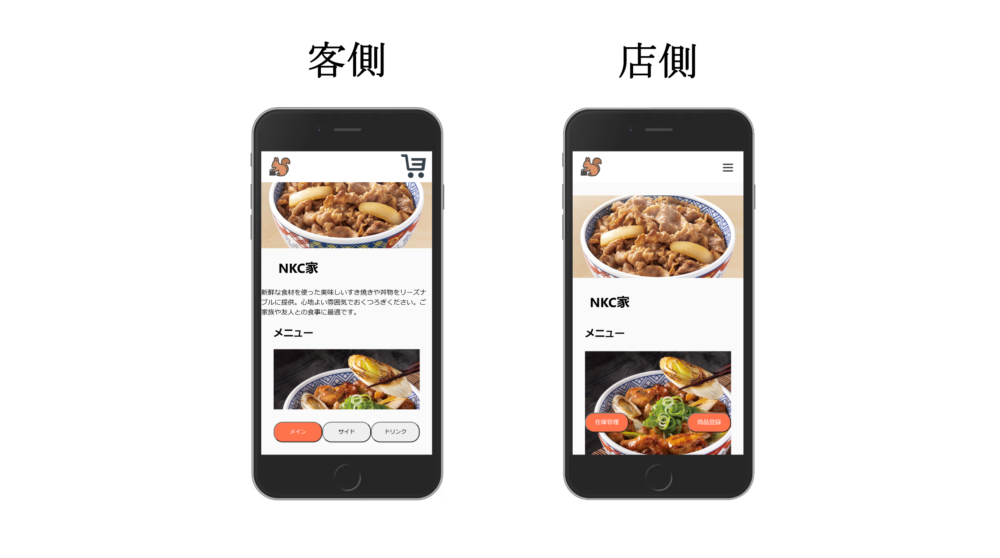

PROJECT

サイト名
モバリス
ターゲット層
経営者・学生
コンセプト
キッチンカーとイベントを対象としたWebモバイルオーダーシステム
制作の目的
注文待ち時間の解消と注文商品の管理により運営をスムーズにし、顧客満足度の向上
制作人数
6人
制作期間
7ヶ月予定
使用ツール
ペイント・ペイント3D / Figma / GitHub / Docker
担当範囲
Design / HTML・CSS / React
制作ポイント・工夫
キッチンカー・イベントを対象としているため、わざとアプリケーションではなく、 比較的に維持・情報の更新が容易でアプリのインストールなしで多くのユーザーがシステムにアクセスできるWebベースで制作をしています。
コメント
商品完成時にショートメッセージを送信する予定でしたが、学校の規約によりその実装ができないことが判明しました。 このため、代替としてLINEを使用することが決定されましたが、LINEの導入に伴い、一部のフロントエンド・バックエンドに再構築が必要となりました。